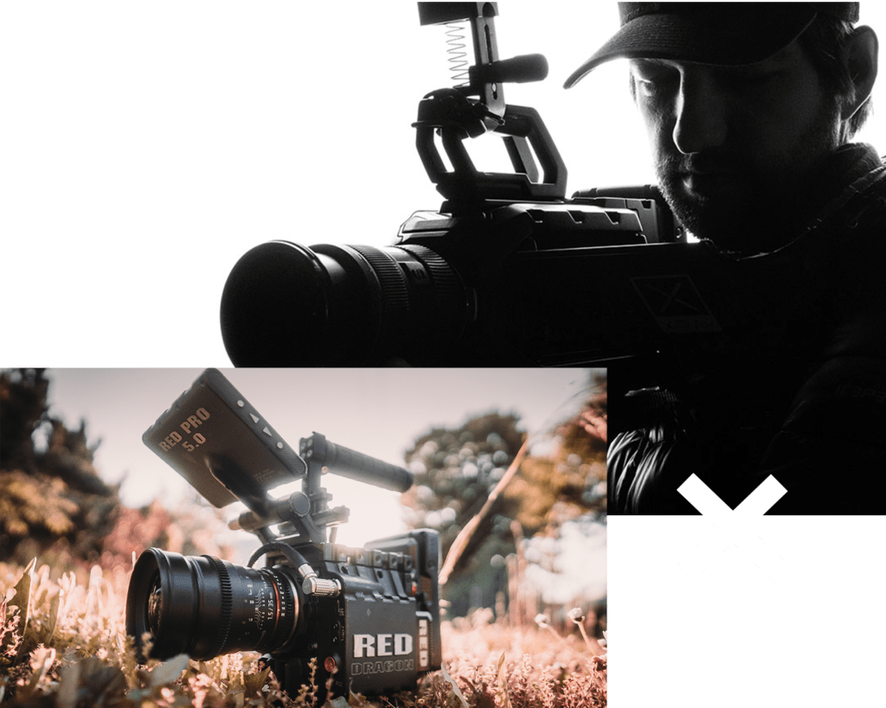
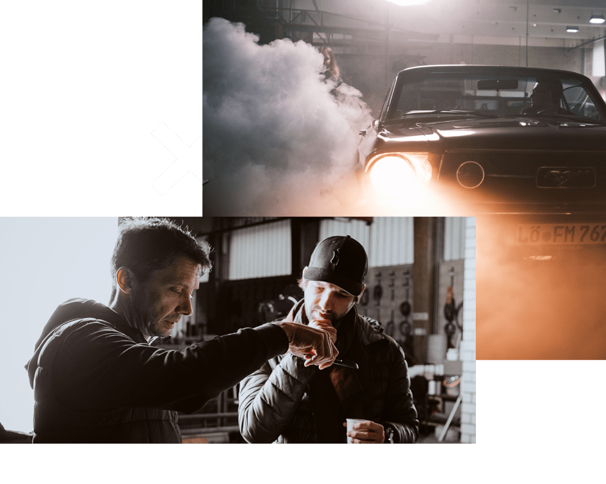

DoP / Kameramann
Kameraarbeit für Produktionen, die einen präzisen Look brauchen.
Als Kameramann und Director of Photography bringe ich technische Set-Erfahrung, Regieverständnis und Postproduktionsdenken zusammen.
Der Vorteil: Kameraentscheidungen werden nicht isoliert getroffen, sondern mit Schnitt, Color, VFX und finaler Ausspielung im Kopf.
RED, ARRI und Cinema-Setups.
Erfahrung mit professionellen Kameras, Objektiven, Monitoring und Setkommunikation.
Stimmung, Kontrast und Motivführung.
Vom kleinen Interviewsetup bis zu aufwändigen Storytrailern mit Speziallicht und schwierigen Locations.
Technocrane, Motion Control und Dynamik.
Aus der Produktionserfahrung: Produktionen mit Technocrane, Motion Control Rig und komplexer Setplanung.
Material, das im Schnitt funktioniert.
Bildgestaltung mit Blick auf Color Grading, VFX, Motion Graphics und Kampagnenvarianten.

Für Produktionen
Buchbar als Kameramann, DoP oder kreativer Sparringspartner.
Ideal, wenn bereits Produktion, Agentur oder Regie gesetzt sind und ein erfahrener Bildgestalter gebraucht wird.
DoP anfragen